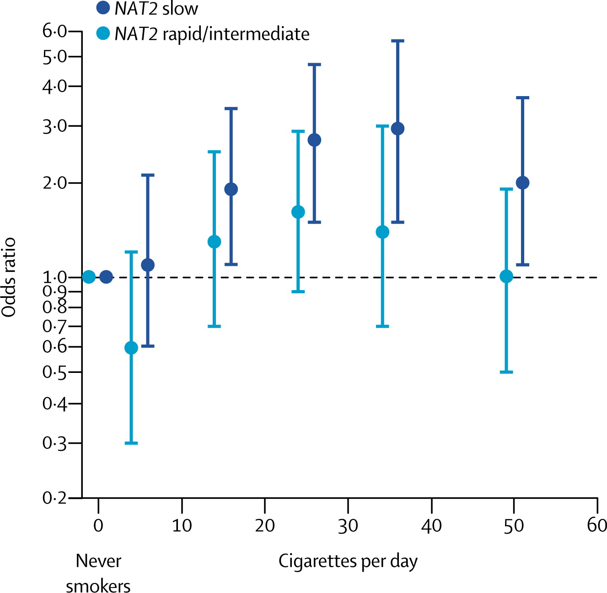

Lecture 21: Logistic Regression Continued
BIOS 600 - Spring 2026
Announcements
- Test corrections due Friday at 11:59 pm
Announcements
Final Exam is Tuesday, May 5, 8am-11am
- Will be in this room and McGavern 2301.
Final Exam will be similar length to previous exams
No formulas needed and so no formula sheet provided
Focus on material since Exam 02
Course evaluation
Please fill out course evaluations
Evaluations are due April 28 at 11:59pm.
If at least 85% of students fill out the course evaluations, everyone in the class will receive an extra 1/2 point on the final exam score.
When to choose what method?
| Predictor Type | Outcome Type | Common Tests / Topics |
|---|---|---|
| Categorical | Categorical | Fisher’s exact test, \(\chi^2\) test |
| Categorical | Continuous | t-tests, ANOVA, nonparametric alternatives |
| Continuous | Continuous | Correlation |
| Continuous or Categorical | Continuous | Regression |
| Continuous or Categorical | Categorical | Logistic regression |
| Other / Complex | Various (e.g. survival, counts) | Advanced or “exotic” methods |
Quick review
Review
Which R function do we use to run a linear regression? How about for a logistic regression?
What additional piece of information do you need to specify when running a logistic regression, compared to a linear regression?
Suppose you have an outcome variable \(Y\) that takes on one of two values, 0 or 1. What distribution does \(Y_i\) have (one observation)? How about \(Y_1, \ldots, Y_n\) (\(n\) observations)?
What is the logit function? (describe in words & symbols)
(Fill in the blank:) Negative logits correspond to probabilities less than ______.
Computational setup
Logistic regression from last time
Recall the cirrhosis dataset from last class.
Researchers are interested in predicting whether a patient died (status) based on the following variables:
ascites: whether the patient had ascites (abnormal fluid buildup in the abdomen) (1 = yes, 0 = no)bili: serum bilirubin in mg/dL (higher values may indicate liver damage/disease)stage: histologic stage of disease (ordinal categorical variable with stages 1, 2, 3, and 4)
Logistic regression model
| term | estimate | std.error | statistic | p.value |
|---|---|---|---|---|
| (Intercept) | -3.143 | 1.054 | -2.981 | 0.003 |
| ascites | 2.868 | 1.067 | 2.689 | 0.007 |
| bili | 0.315 | 0.064 | 4.886 | 0.000 |
| as.factor(stage)2 | 1.251 | 1.095 | 1.142 | 0.253 |
| as.factor(stage)3 | 1.716 | 1.069 | 1.604 | 0.109 |
| as.factor(stage)4 | 2.167 | 1.075 | 2.015 | 0.044 |
Hypothesis tests in logistic regression
Generally, we wish to know whether the OR = 1 or equivalently, whether the logit of \(p\) (a \(\beta\) coefficient) = 0. To test
\[H_0: \beta_k = 0\]
\[H_1: \beta_k \neq 0\]
we can compare the ratio of a parameter estimate to its standard error using the standard normal distribution (reason we use Z instead of t is a bit technical).
Logistic regression model
| term | estimate | std.error | statistic | p.value |
|---|---|---|---|---|
| (Intercept) | -3.143 | 1.054 | -2.981 | 0.003 |
| ascites | 2.868 | 1.067 | 2.689 | 0.007 |
| bili | 0.315 | 0.064 | 4.886 | 0.000 |
| as.factor(stage)2 | 1.251 | 1.095 | 1.142 | 0.253 |
| as.factor(stage)3 | 1.716 | 1.069 | 1.604 | 0.109 |
| as.factor(stage)4 | 2.167 | 1.075 | 2.015 | 0.044 |
Interpretation
\(\hat\beta_{\text{bili}}\): Each one mg/dL increase in bilirubin is associated with the odds of death being multiplied by exp(.315) = 1.37, holding ascites presence and ascites presence constant.
Another Equivalent Interpretation: A one mg/dL increase in bilirubin is associated with 37% higher odds of death, holding ascites presence and status constant.
Interpretation includes estimates of magnitude, the units and since we are using multivariable model specifies we are holding all other varibles constant
In R
| term | estimate | std.error | statistic | p.value |
|---|---|---|---|---|
| (Intercept) | 0.043 | 1.054 | -2.981 | 0.003 |
| ascites | 17.608 | 1.067 | 2.689 | 0.007 |
| bili | 1.370 | 0.064 | 4.886 | 0.000 |
| as.factor(stage)2 | 3.493 | 1.095 | 1.142 | 0.253 |
| as.factor(stage)3 | 5.561 | 1.069 | 1.604 | 0.109 |
| as.factor(stage)4 | 8.733 | 1.075 | 2.015 | 0.044 |
Confidence intervals
CIs for associations on the logit scale are given by
\[\hat \beta_j \pm z^*_{1-\alpha/2} \times \widehat {SE} (\hat\beta_j)\]
These are typically translated into confidence intervals in odds scale by exponentiating the lower and upper limits.
\[[\text{exp}(\hat \beta_j - z^*_{1-\alpha/2} \times \widehat {SE} (\hat\beta_j)), \text{exp}(\hat \beta_j + z^*_{1-\alpha/2} \times \widehat {SE} (\hat\beta_j))]\]
Confidence intervals
- For the variable ascites [patient had ascites (1 = yes, 0 = no)]
- \(\hat{\beta}_{ascites}\) = 2.868
- Standard error of \(\hat{\beta}_{ascites}\) = 1.067
- We are 95% confident that the true difference in the log‑odds of the outcome comparing patients with ascites to those without ascites lies within the following interval, holding the other variables in the model constant: \[\hat \beta_j \pm z^*_{1-\alpha/2} \times \widehat {SE} (\hat\beta_j)\]
In R
| term | estimate | std.error | statistic | p.value | conf.low | conf.high |
|---|---|---|---|---|---|---|
| (Intercept) | -3.143 | 1.054 | -2.981 | 0.003 | -6.062 | -1.499 |
| ascites | 2.868 | 1.067 | 2.689 | 0.007 | 1.167 | 5.796 |
| bili | 0.315 | 0.064 | 4.886 | 0.000 | 0.198 | 0.450 |
| as.factor(stage)2 | 1.251 | 1.095 | 1.142 | 0.253 | -0.525 | 4.208 |
| as.factor(stage)3 | 1.716 | 1.069 | 1.604 | 0.109 | 0.017 | 4.647 |
| as.factor(stage)4 | 2.167 | 1.075 | 2.015 | 0.044 | 0.450 | 5.104 |
Confidence intervals
- For the variable ascites [patient had ascites (1 = yes, 0 = no)]
- \(\hat{\beta}_{ascites}\) = 2.868
- Standard error of \(\hat{\beta}_{ascites}\) = 1.067
- We are 95% confident that the true odds ratio comparing patients with ascites to those without ascites lies within the following interval, holding the other variables in the model constant: \[[\text{exp}(\hat \beta_j - z^*_{1-\alpha/2} \times \widehat {SE} (\hat\beta_j)), \text{exp}(\hat \beta_j + z^*_{1-\alpha/2} \times \widehat {SE} (\hat\beta_j))]\]
In R
| term | estimate | std.error | statistic | p.value | conf.low | conf.high |
|---|---|---|---|---|---|---|
| (Intercept) | 0.043 | 1.054 | -2.981 | 0.003 | 0.002 | 0.223 |
| ascites | 17.608 | 1.067 | 2.689 | 0.007 | 3.213 | 329.029 |
| bili | 1.370 | 0.064 | 4.886 | 0.000 | 1.219 | 1.568 |
| as.factor(stage)2 | 3.493 | 1.095 | 1.142 | 0.253 | 0.591 | 67.253 |
| as.factor(stage)3 | 5.561 | 1.069 | 1.604 | 0.109 | 1.017 | 104.304 |
| as.factor(stage)4 | 8.733 | 1.075 | 2.015 | 0.044 | 1.568 | 164.733 |
Predicted probabilities
There is a one-to-one-relationship between \(p\) and \(logit(p)\). So, if we predict the log-odds, we can back-transform to get back to a predicted probability.
For instance, suppose a patient does not have ascites, has a bilirubin level of 5 mg/dL, and is a stage 2 patient. Their predicted log-odds are:
\[−3.14+0.31×5+1.25=−0.34\]
Thus, their predicted probability of dying is
\[\frac{\text{exp}(-0.34)}{1+\text{exp}(-0.34)} = 0.42\]
In R
# Example patient:
new_patient <- data.frame(
ascites = 0,
bili = 5,
stage = 2
)
# Get predicted log-odds (type = "link")
pred_logodds <- predict(fit2,
newdata = new_patient,
type = "link")
# Convert log-odds to odds
pred_odds <- exp(pred_logodds)
# Convert odds to probability
pred_prob <- pred_odds / (1 + pred_odds)In R
Type = link tells R to estimate the outcome variable in terms of a function of the linear predictor (in the case of logistic regression this returns the log-odds (logit) of the outcome)
Since generalized linear models do not model the outcome directly in the
glmfunction we need to specify the distribution via the family argumentSince generalized linear models do not model the outcome directly in the
predictfunction we need to specify the scale on which predictions are returned (e.g. log‑odds vs. probabilities)
Output
Alternatively…
- We can also calculate the predicted probability directly using
predictby setting thetypeto be"response".
Logistic regression model
We can also include interaction terms in logistic regression models
This allows to test whether the association between a predictor and the outcome variable depends on the value of another variable
Let’s take for example this study looking at gene by environment interaction with risk of bladder cancer
Without interaction
| term | estimate | std.error | statistic | p.value |
|---|---|---|---|---|
| (Intercept) | -5.394 | 0.282 | -19.139 | 0.000 |
| NAT2slow | 1.425 | 0.175 | 8.140 | 0.000 |
| cigs1-9 | 0.094 | 0.380 | 0.248 | 0.804 |
| cigs10-19 | 0.796 | 0.307 | 2.593 | 0.010 |
| cigs20-29 | 1.154 | 0.301 | 3.832 | 0.000 |
| cigs30-39 | 1.784 | 0.281 | 6.348 | 0.000 |
| cigs40+ | 2.335 | 0.283 | 8.247 | 0.000 |
Individuals smoking 20-29 cigarettes per day have exp\((\hat \beta_{cigs20-29})\)=exp(1.15) times the odds of having bladder cancer compared to individuals smoking 0 cigarettes per day, holding NAT2 constant
Interaction terms
| term | estimate | std.error | statistic | p.value |
|---|---|---|---|---|
| (Intercept) | -4.807 | 0.410 | -11.727 | 0.000 |
| NAT2slow | 0.618 | 0.510 | 1.212 | 0.225 |
| cigs1-9 | -0.140 | 0.710 | -0.197 | 0.844 |
| cigs10-19 | 0.301 | 0.559 | 0.538 | 0.591 |
| cigs20-29 | 0.858 | 0.544 | 1.578 | 0.114 |
| cigs30-39 | 1.245 | 0.497 | 2.504 | 0.012 |
| cigs40+ | 0.971 | 0.582 | 1.669 | 0.095 |
| NAT2slow:cigs1-9 | 0.358 | 0.842 | 0.425 | 0.671 |
| NAT2slow:cigs10-19 | 0.688 | 0.671 | 1.026 | 0.305 |
| NAT2slow:cigs20-29 | 0.438 | 0.654 | 0.669 | 0.503 |
| NAT2slow:cigs30-39 | 0.744 | 0.604 | 1.232 | 0.218 |
| NAT2slow:cigs40+ | 1.756 | 0.674 | 2.603 | 0.009 |
Interaction term
- With the interaction term in the model:
Individuals smoking 20-29 cigarettes per day have exp\((\hat \beta_{cigs20-29})\)=exp(1.15) times the odds of having bladder cancer compared to individuals smoking 0 cigarettes per day, when the other predictor (NAT2) is 0
Interaction terms

Application Exercise
Tip
Head to Canvas and download the template for Application Exercise 06. AE 06 will be due this Sunday at 11:59pm.
Selected groups should put their answers (screenshots of code, interpretations) on these google slides. Pick a representative to present your slide.
More practice
| term | estimate | std.error | statistic | p.value |
|---|---|---|---|---|
| (Intercept) | -3.143 | 1.054 | -2.981 | 0.003 |
| ascites | 2.868 | 1.067 | 2.689 | 0.007 |
| bili | 0.315 | 0.064 | 4.886 | 0.000 |
| as.factor(stage)2 | 1.251 | 1.095 | 1.142 | 0.253 |
| as.factor(stage)3 | 1.716 | 1.069 | 1.604 | 0.109 |
| as.factor(stage)4 | 2.167 | 1.075 | 2.015 | 0.044 |
By hand, write out the following. Leave in terms of values given:
What is the model we are using?
What is the predicted log odds of dying for a patient with ascites, a bilirubin level of 3 mg/dL, and stage 3?
Given this value, what is the predicted probability?
Recap
Logistic regression review
Interpreting continuous and categorical coefficients in a logistic regression model
Predicting probabilities using a logistic regression model object
Next class
- Last day of class is this Thursday (Class wrap-up, Exam info)